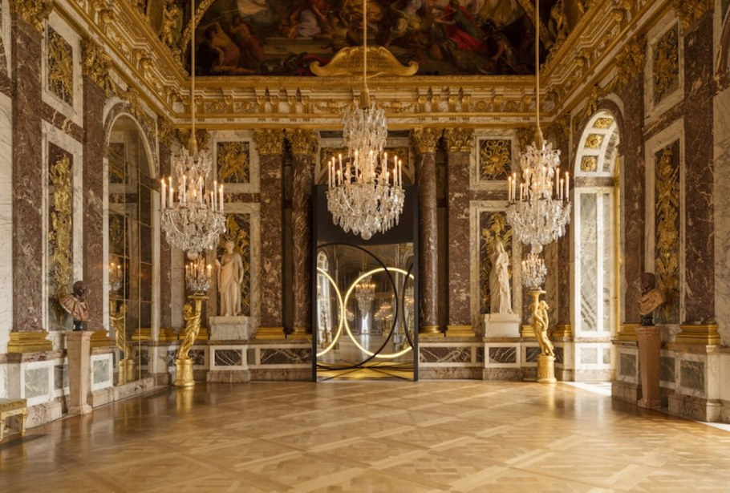
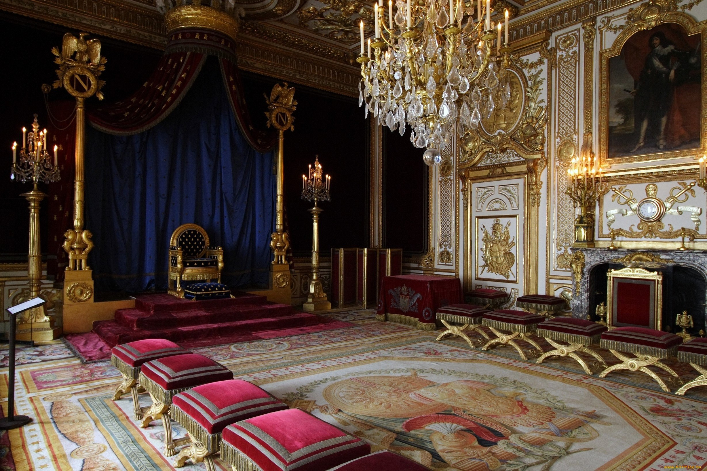
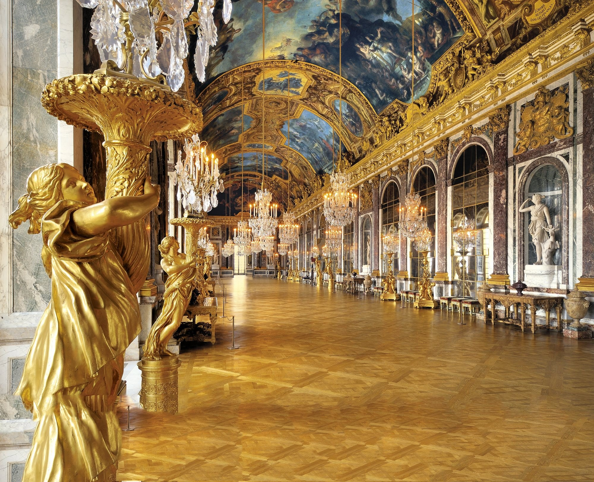
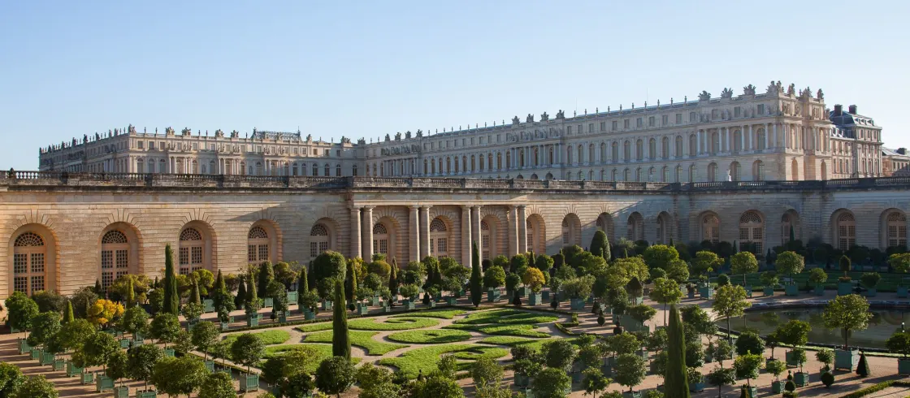
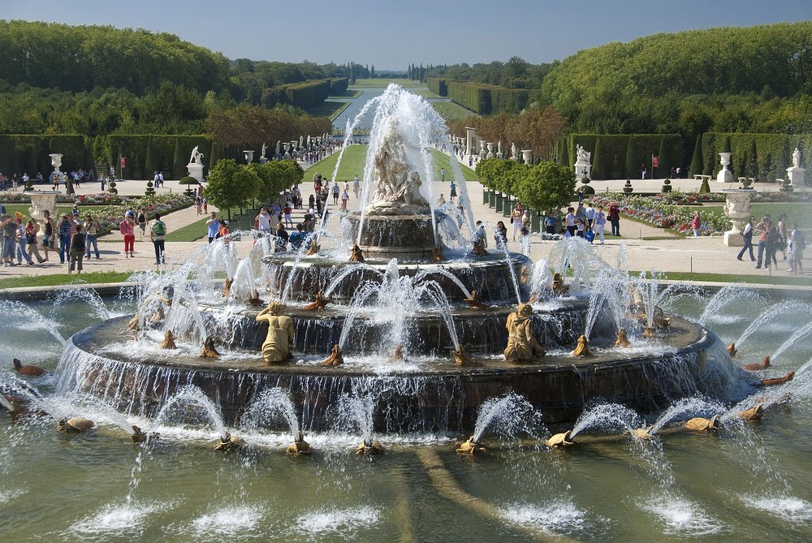
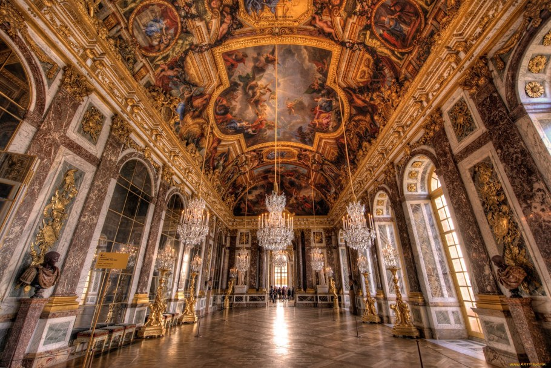
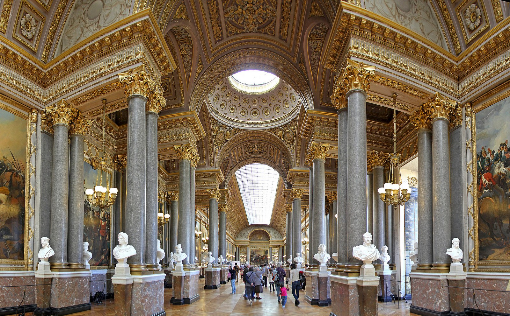

Версаль. Перлина французької корони
Прогулянка палацом, який збудував король Сонце
Там, де були болота і ґрунти непридатні для садівництва, куди неможливо підвести воду,
триста
років тому
звели неймовірний та неповторний Версальський палац, оточивши його унікальним парком із фонтанами. Сьогодні
вже важко уявити, яке враження справляв на відвідувачів замок та парк у ті часи, але й нині вони викликають
захоплення та вражають своєю елегантністю.
Якщо колись Версаль знаходився на віддаленні від міста, діставатися до нього було
непросто, а
французька
аристократія ніяк не бажала переселятися у новозбудований Людовіком XIV палац, то нині міська паризька
електричка РЕР із комфортом і швидко довезе до Версалю, 5 хвилин пішки і ви перед золотими воротами палацу.
Але варто поспішити й прийти до відкриття, бо пізніше потрапити всередину не така й проста справа. Черга
перед воротами вибудовується у довгий зигзаг. Навіть придбання квитка онлайн ніяк не звільнить вас від
вистоювання у цій черзі, яка тягнеться і зовні, і всередині палацу.

Версаль став дуже людним місцем ще з початку його будівництва. Над зведенням
палацу та
облаштуванням парку
працювали від 30 до 40 тисяч робітників. Навіть коли в палац за наказом короля вже заселялися вельможі, там
все ще тривали ремонтні роботи. Палац постійно перебудовували та вдосконалювали, хоч бажаючих жити в ньому
спочатку було небагато (придворні віддавали перевагу Парижу), але з часом він став густонаселеним і час від
часу розширювався, ремонтувався. Таким він є і сьогодні – частина палацового комплексу закрита через
реставрацію, а людей, що бажають його відвідати дуже багато. І Це недарма.

Величні зали, розписані стелі, золоті прикраси, - все свідчить про велич того часу, про
розвиток мистецтва і
науки, про бажання демонструвати красу та досягнення. Над внутрішнім вбранням працювали найвідоміші митці
того часу.

Урочистості
Перлиною і головним місцем палацу є дзеркальна галерея. Неймовірне за красою та
величчю
місце
слугувало
місцем урочистих аудієнцій, розкішних балів, укладання шлюбів представниками королівської сім’ї. 28
червня
1919 року у дзеркальній галереї Версальського палацу був підписаний Версальський мирний договір.
Зі стін палацу на численних відвідувачів дивляться колишні власники покоїв - визначні особи, митці того
часу
і навіть художники, які ці картини створювали. Безперечно, по кількості портретів перемагає засновник та
втілювач ідеї будівництва Версальського палаце та парку, відомий на весь світ, Людовік XIV – Король
Сонце.

Людовік ХIV, коли обирав місце для побудови Версальського палацу, згадав про
мисливський
будинок свого тата
та вирішив на його місці побудувати величний палац. Але й пам'ять про батька Луї знищувати не побажав.
Перед
архітекторами, які воліли будувати все заново, поставив непросте завдання – внести старий мисливський
будинок у загальний архітектурний задум та розбудувати палац навколо нього. Задум короля взялися
реалізувати
корифеї того часу: архітектор Луї Лево, художник Шарль Лебрен і ландшафтний архітектор Андре Ленотр.
Версальський парк
Паралельно зі зведенням палацу, почали організовувати сад, який мав перевершити всі сади,
які
існували в той
час. За задумом Людовіка XIV, символом королівської влади та єдиновладдя мало бути й упорядкування саду,
алеї якого, як піддані до короля, мали сходитися до Версальського палацу.
Парк прикрашають статуї давньогрецьких богів та богинь. Щороку, за часів Луї сюди
імпортували 2
млн
екземплярів різних рослин. Попри відсутність води та неможливість побудувати автоматичні зрошувальні
системи, сад вражав цвітом та різноманіттям з ранньої весни до пізньої осені. Ще в часи Людовіка XIV тут
існувало суворе правило: король не повинен бачити жодної квітки, яка пожовкла або зів’яла.

Окрема гордість – фонтани Версальського парку. Аби вони функціонували,
гідротехніки будували
акведуки,
осушували болота, міняли русла річок, закачували воду із самої Сени. Навіть зараз, у часи технічного
прогресу, води недостатньо, аби фонтани працювали постійно. Вмикають їх лише у вихідні, за розкладом або
святкові дні. Усього великих і малих фонтанів на території парку 1400. Фонтани, як і все наповнення
парку
Версаля, створювалося на сюжети давньогрецьких міфів.

Завершення
Не варто думати, що парк біля палацу був виключно місцям для прогулянок. Тут творили політику, писали
історію того часу: укладали угоди, створювали політичні об'єднання, обговорювали шлюби і, безумовно,
плели
інтриги. І всі ці серйозні справи супроводжувалися пишними балами з феєрверками, вишуканими напоями та
їжею,
демонстрацією новинок науки, моди, мистецтва. Музика звучала тут увесь день, а ввечері її заміняли
вистави
театральної трупи придворного балету, в якому часто грав сам Людовик та його фаворитки.

З тих часі минуло три століття. Але і парк, і палац, хоч втратили свою політичну вагу, лишаються
унікальним
творінням людських рук. Їх намагалися копіювати, у часи Короля Сонце створили спеціальні цехи, де
виготовляли предмети інтер’єру, текстиль, меблі як у Версалі, що не лише приносило прибуток, а
перетворило
Францію у країну, яка визначала в той час й донині, моду у всьому – від одягу до інтер’єру та
упорядкування
саду.
